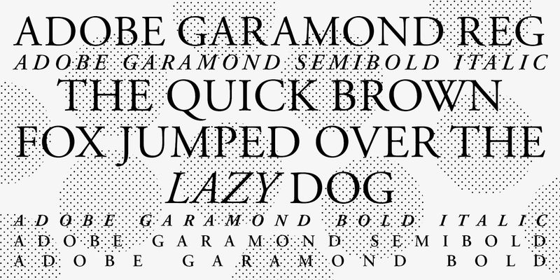
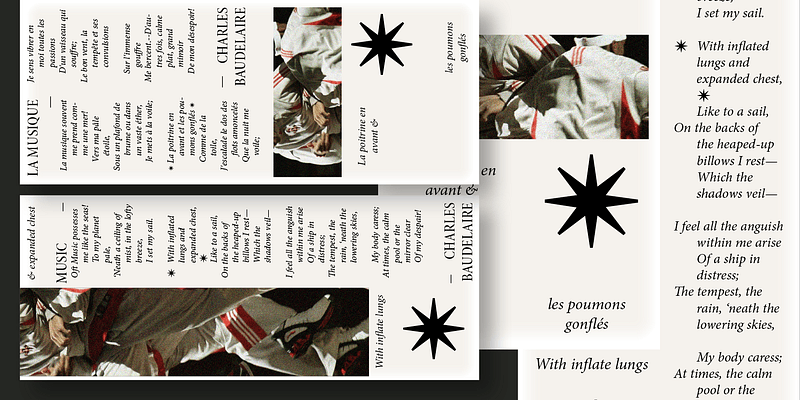

Both typefaces were designed by the same person, Robert Slimbach, only a year apart, for Adobe Originals. Adobe Originals served as an in-house type foudery and began in 1989 along with the creation of Adobe Garamond.

From Adobe Fonts
Adobe Garamond
Designer
Robert Slimbach
Released
1989, Adobe Systems
Based on
Roman types of Claude Garamond (16th-century Paris) and italic types of Robert Granjon
Adobe Garamond was Adobe's first historical type revival and one of the first releases in its new Adobe Originals program. Slimbach studied Claude Garamond's original 16th-century typeface to base the design on authentic source material. This was different than previous iterations of Garamond which were copies of later 17th-century types, whereas Adobe Garamond is a remake of the orignical.

From Adobe Fonts
Minion
Designer
Robert Slimbach
Released
1990, Adobe Systems
Based on
Not a revival of one specific face, it was inspired broadly by late Renaissance oldstyle type.
Slimbach began Minion right after finishing Adobe Garamond, carrying over the same research into Renaissance type but this time designing an original face rather than reviving a historical one. Its name comes from an old printers' term for a small type size (about 7 points).
Comparison
Here we see the differences between the two types. Overall Minion has a bolder, heavier weight to it and harsher serifs compared to the soft serifs of Adobe Garamond. They have similar line heights, thoguh Garamond has a higher ascender line despite having a lower mean line compared to Minion.